For the upcoming week (7 Sep - 13 Sep) I will put my first priority on passing the SAA Exam ⛽️⛽️ And patch the knowledge gap as much as I can.
Patch my EC2 Knowledge
Inspector
- Installed into EC2 instances as an agent;
- Run automated tests
- Generate PDF report
Options to Connect to instance
A standalone SSH Client
Done that.
Session Manager
- AWS Systems Manager Session Manager
- Manage your EC2 instances, on-premises instances, and virtual machines (VMs) through an interactive one-click browser-based shell or through the AWS CLI)
EC2 Instance Connect (Browser-based SSH connect)
- Connect to your EC2 instance within your browser
- A temporary key managed by AWS
EC2 Launch Types
Dedicated Instances
May share hardware with other instances from the same AWS account that are not Dedicated instances.
Pricing
Dedicated Instance can be on-demand or reserved (1 or 3 years)
Dedicated Instance pricing has two components:
- (1) an hourly per instance usage fee. Slightly more expensive than on-demand fee.
- (2) a dedicated per region fee (note that you pay this once per hour regardless of how many Dedicated Instances you’re running). $2 per hour.
Dedicated Hosts
- BYOL
- Targeted/Automatic instance placement
- Visibility of socket, host ID, core
- Affinity between a host and instance
- When you no longer need to use a host, if it is an On-Demand Dedicated Host, you first need to stop or terminate all of the instances running on the host, and then you can release the host using the ReleaseHosts API or the AWS Management Console.
Pricing
- The price for a Dedicated Host varies by instance family, region, and payment option.
- Regardless of the quantity or the size of instances that you choose to launch on a particular Dedicated Host you only pay for each active Dedicated Host.
- Can be on-demand or reserved. You can also purchase saving plans.
Spot Instance Lifecycle

Spot Instance Request States

End of lifecycle States:
- Failed
- Closed (one-time)
- Cancelled (persistent)
If you terminate an instance:
- Disabled (For persistent request)
- Closed (For one-time request)
One-time request:
- open – The request is waiting to be fulfilled.
- active – The request is fulfilled and has an associated Spot Instance.
- closed – The Spot Instance was interrupted or terminated (One-time request)
Persistent request:
- open – The request is waiting to be fulfilled.
- active – The request is fulfilled and has an associated Spot Instance.
- disabled – You stopped the Spot Instance.
- cancelled – You canceled the request, or the request expired.
Spot Fleet
Launch and manage an entire fleet of Spot Instances with one request.
The Spot Fleet will try to meet the target capacity with price constraints
- Define possible launch pools: instance type (m5.large), OS, Availability Zone
- Can have multiple launch pools, so that the fleet can choose
- Spot Fleet stops launching instances when reaching capacity or max cost
Strategies to allocate Spot Instances:
- lowestPrice: from the pool with the lowest price (cost optimization, short workload)
- diversified: distributed across all pools (great for availability, long workloads)
- capacityOptimized: pool with the optimal capacity for the number of instances
Spot Fleets allow us to automatically request Spot Instances with the lowest price
Spot Block
Use the new BlockDuration parameter to specify the number of hours your want your instance(s) to run.
Security Group
(Points taken from Stephane’s Udemy Course)
- Works “outside” the EC2: EC2 instance won’t know about the blocked traffic
- Good to maintain a separate security group for SSH access
- If your application is not accessible (time out), then it’s a security group issue
- If your application gives a “connection refused“ error, then it’s an application error, or it’s not launched
Elastic IP
(Points taken from Stephane’s Udemy Course)
Try to avoid using Elastic IP:
- They often reflect poor architectural decisions
- Instead, use a random public IP and register a DNS name to it
- Or, as we’ll see later, use a Load Balancer and don’t use a public IP
Bootstrapping
- Bootstrapping means launching commands when a machine starts
- Run once at the instance first start
- The EC2 User Data Script runs with the root user
Related Concept:
- Instantiating Compute Resources
- Another approach of bootstrapping: AWS OpsWorks (Chef and Puppet)
- Golden Image: AMI, RDS Snapshot, EBS Snapshot
- Compared to the bootstrapping approach, a golden image:
- faster start times
- removes dependencies to configuration services or third-party repositories.
Instance Types
Burstable Instances (T2/T3)
- If the machine bursts, it utilizes “burst credits”
- If all the credits are gone, the CPU becomes BAD
- If your instance consistently runs low on credit, you need to move to a different kind of non-burstable instance
- T2/T3 Unlimited: Pay extra if going over credit balance, but you don’t lose performance. Careful: could be very costly if you don’t monitor how much you’ve bursted.
Important Families
C: Compute
G: GPU, video rendering/ML
M: “Medium”/Balanced, General purpose/Web APP
R: RAM, in-memory caches
I: I/O optimised (Instance Storage), Databases
AMI
AMI Storage
- AMI lives in S3.
- Amazon S3 is a durable, cheap and resilient storage where most of your backups will live (but you won’t see them in the S3 console).
- By default, your AMIs are private, and locked for your account / region.
- You get charged for the storage space that AMI takes in S3.
- Remove AMIs you don’t use.
Copy AMI
- If you copy an AMI shared with you, you are the owner of the new AMI, and you specify its region.
- You can’t copy an AMI with an associated
billingProductcode that was shared with you from another account. This includes Windows AMIs and AMIs from the AWS Marketplace. - To copy a shared AMI with a
billingProductcode, launch an EC2 instance in your account using the shared AMI and then create an AMI from the instance. - You can’t copy an encrpyted AMI shared with you.
- If you have the underlying snapshot and encryption key were shared with you, you can copy the snapshot while re-encrypting it with a key of your own. You own the copied snapshot, and can register it as a new AMI.
Placement Group
- FREE: There is no charge for creating a placement group.
- Instances with a tenancy of host cannot be launched in placement groups.
Spread
- Each instance placed on distinct racks
- Each rack having its own network and power source
- Reduce correlated failures
- Can span multiple AZ in the same Region.
- Maximum of 7 running instances per AZ per group (limited by number of racks available). If 3 AZ in a region, you can have at most 21 instances in the group.
- If you need to have more than seven instances in an Availability Zone, then the recommendation is to use multiple spread placement groups.
- Spread placement groups are not supported for Dedicated Instances or Dedicated Hosts.
- Maximum availability requirement, isolated from failure of each other

Partition
- Amazon EC2 divides each group into logical segments called partitions.
- Amazon EC2 ensures that each partition within a placement group has its own set of racks.
- A partition placement group can have a maximum of 7 partitions per Availability Zone (limited by number of racks available).
- A partition placement group with Dedicated Instances can have a maximum of two partitions (If you don’t want to share the rack with other accounts, you can only be assigned 2 racks for your partitions).
- Large distributed and replicated workloads: Hadoop Distributed File System (HDFS), HBase (a non-relational distributed database), Cassandra (NoSQL database), Kafka (stream-processing)

Cluster
- A cluster placement group can span peered VPCs in the same Region.
- Higher per-flow throughput limit of up to 10 Gbps for TCP/IP traffic
- Placed in the same high-bisection bandwidth segment of the network.
- Low network latency, high network throughput
- Big Data job that needs to complete fast; Application that needs extremely low latency and high network throughput

Elastic Network Interfaces(ENI)
- Every instance in a VPC has a default network interface/primary network interface. You cannot detach a primary network interface from an instance.
- Logical component in a VPC that represents a virtual network card
- You can create ENI independently and attach them on the fly (move them) on EC2 instances for failover.
- The maximum number of network interfaces that you can use varies by instance type.
- Bound to AZ
- An ENI can have the following attributes:
- A primary private IPv4 address from the IPv4 address range of your VPC
- One public IPv4 address (or it can have none)
- One or more secondary private IPv4 addresses from the IPv4 address range of your VPC
- One Elastic IP address (IPv4) per private IPv4 address
- One or more IPv6 addresses
- One or more security groups
- A MAC address
- A source/destination check flag
- A description

eth0 is web server’s jumpbox to external Internet, and eth1 is web server’s jumpbox to Corporate Data centre.
Hibernate

- Hibernation saves the contents from the instance memory (RAM) to your Amazon EBS root volume.
- You EBS root volume must be encrypted.
- User Cases:
- Pre-Warm. If an instance or application takes a long time to bootstrap and build a memory footprint to become fully productive, you can use hibernation to pre-warm the instance. To pre-warm the instance, you:
- Launch it with hibernation enabled.
- Bring it to a desired state.
- Hibernate it, ready to be resumed to the same state as needed.
- Long-running processing on Spot instance.
- Pre-Warm. If an instance or application takes a long time to bootstrap and build a memory footprint to become fully productive, you can use hibernation to pre-warm the instance. To pre-warm the instance, you:
- Prerequisites to hibernate an instance:
- Supported instance families: C3, C4, C5, M3, M4, M5, R3, R4, and R5.
- Instance RAM size: must be less than 150 GB.
- Instance size: not supported for bare metal instances
- Supported EBS volume types: General Purpose SSD (gp2) or Provisioned IOPS SSD (io1 or io2).
- Have to enable hibernation at launch: You cannot enable hibernation on an existing instance (running or stopped).
- Root volume has to be encrypted.
- We do not support keeping an instance hibernated for more than 60 days. To keep the instance for longer than 60 days, you must start the hibernated instance, stop the instance, and start it.
- You cannot hibernate an instance that is in an Auto Scaling group or used by Amazon ECS.
- You can’t stop or hibernate instance store-backed instances.
- The following actions are not supported for hibernation:
- Changing the instance type or size of a hibernated instance
- Creating snapshots or AMIs from instances for which hibernation is enabled
- Creating snapshots or AMIs from hibernated instances
AWS Directory Service
AWS Managed Microsoft AD is built on actual Microsoft AD and does not require you to synchronize or replicate data from your existing Active Directory to the cloud.
Related concepts:
- IAM Federation, SSO
- SAML Standard
Scalability, Availability, Fault Tolerance
- Vertical scalability is very common for non distributed systems, such as a database.
- RDS, ElastiCache are services that can scale vertically.
- Horizontal scaling implies distributed systems.
- The goal of high availability is to survive a data center(AZ) loss.
- High availability can be passive (RDS Multi-AZ) or active(horizontal scaling)
- See my other journal for HA v.s. Fault Tolerance
Elastic Load Balancing
- Expose a single point of access (DNS) to your application.
- Provide SSL termination (HTTPS) for your websites
- Seamlessly mask failure of downstream instances
- Enforce stickiness with cookies (ALB, CLB)
- Host name:
[name]-[id].region.elb.amazonaws.com
ELB is Managed Service
- AWS Managed, guaranteed working
- AWS manages upgrades, maintenance, inherently HA.
ELB Pre-Warm
- Amazon ELB is able to handle the vast majority of use cases for our customers without requiring “pre-warming” (configuring the load balancer to have the appropriate level of capacity based on expected traffic).
- In certain scenarios, such as when flash traffic is expected, or in the case where a load test cannot be configured to gradually increase traffic, we recommend that you contact us to have your load balancer “pre-warmed”.
ELB Monitoring
- ELB access logs will log all access requests
- CloudWatch Metrics gives you aggregated statistics
ALB Trouble Shooting
- 4**: client induced
- 5**: application induced
- 503: Service unavailable.
- Insufficient capacity in the load balancer
- No registered instances
- No healthy instances
- Surge queue if full.
ALB (v2) features
- Layer 7: HTTP/HTTPS
- Support redirects, e.g. HTTP to HTTPS
- Support HTTP/2 and WebSocket
- Can load balance to multiple applications on the same machine.
- Port mapping to dynamic ports on ECS.
- Can load balance to multiple HTTP applications across machines (target groups).
- Great for microservices and containers.
ALB Listeners
Listeners support the following protocols and ports:
- Protocols: HTTP, HTTPS
- Ports: 1-65535
Listener Rules
- Each listener has a default rule.
- Default rules can’t have conditions.
- If the conditions for none of a listener’s rules are met, then the action for the default rule is performed.
- You can optionally define additional rules. Each rule consists of:
- a priority,
- one or more actions,
- one or more conditions.
Rule Priority
- Each rule has a priority.
- Rules are evaluated in priority order, from the lowest value to the highest value.
- The default rule is evaluated last.
- You can change the priority of a nondefault rule at any time. You cannot change the priority of the default rule.
Rule Actions
Each rule action has a type, an order, and the information required to perform the action.
Action types:
authenticate-cognito(HTTPS)authenticate-oidc(HTTPS)fixed-responseforwardForward requests to the specified target groups.redirectRedirect requests from one URL to another.The action with the lowest order value is performed first.
Each rule must include exactly one of the following actions:
forward,redirect, orfixed-response, and it must be the last action to be performed.
Rule Condition Types
- HTTP header
- HTTP Request method
- Host
- Path
- Query string
- Source IP
ALB Target Groups
- What could be in a target group:
- EC2 instances (could be managed by ASG)
- ECS tasks (managed by Elastic Container Service)
- Lambda functions, HTTP request is translated into a JSON event.
- IP Address, must be private IPs.
- ALB can route to multiple target groups
- Each Target Group has its own Health Check settings.
- Application Load Balancer periodically sends requests to its registered targets to test their status.
ALB Slow Start
- Application Load Balancers now support a slow start mode that allows you to add new targets without overwhelming them with a flood of requests.
- With the slow start mode, targets warm up before accepting their fair share of requests based on a ramp-up period that you specify.
- Slow start mode can be enabled by target group and can be configured for a duration of 30 seconds to 15 minutes.
- The load balancer linearly increases the number of requests sent to a new target in a target group up to its fair share during the slow start ramp-up window.
Visibility of Request source
- The application servers don’t see the client’s IP directly
- Client IP is inserted in the header
X-Forwarded-For - Port:
X-Forwarded-Port - Proto:
X-Forwarded-Proto
- Client IP is inserted in the header
NLB features
- ~100ms latency (ALB: 400ms)
- Used for extreme performance, TCP or UDP traffic
- Not in free-tier
- NLB enables static IP addresses for each Availability Zone. These static addresses don’t change, so they are good for our firewalls’ whitelisting.
Static IP addressing
- ALB scale automatically to adapt to changes in your traffic. This makes planning for growth easy, but it has a side effect of changing the IP addresses that clients connect to.
- NLB enables static IP addresses for each Availability Zone. These static addresses don’t change, so they are good for our firewalls’ whitelisting.
- To solve the problem: Put an internal Application Load Balancer behind a Network Load Balancer.
Load Balancer Stickiness
- Stickiness: The same client is always redirected to the same instance behind a load balancer
- Supported by CLB and ALB
- The “cookie” for stickiness has an expiration date you control
- May bring imbalance to the load over the backend EC2 instances.
Availability Zones and Load Balancer Nodes
- Each ELB has multiple nodes.
- When you enable an Availability Zone for your load balancer, Elastic Load Balancing creates a load balancer node in the Availability Zone.
- We recommend you enable multiple AZ (ALB requires multiple AZ)
- If you register targets in an Availability Zone but do not enable the Availability Zone, these registered targets do not receive traffic.
- If one Availability Zone becomes unavailable or has no healthy targets, the load balancer can route traffic to the healthy targets in another Availability Zone.
Cross-zone load balancing enabled:

Cross-zone load balancing disabled:

Cross-Zone Load Blancing for different types
- CLB: Disabled by default, no charges for inter AZ data if enabled
- ALB: always on, can’t be disabled, no charge for inter AZ data
- NLB, disabled by default, charges apply for inner AZ data.
IP addresses of Load Balancer Nodes
- Each node of an internet-facing load balancer has a public IP address. The DNS name of an internet-facing load balancer is publicly resolvable to the public IP addresses of the nodes.
- The node of an internal load balancer has only private IP addresses. The DNS name of an internal load balancer is publicly resolvable to the private IP addresses of the nodes.
- Both internet-facing and internal load balancers route requests to your targets using private IP addresses.
- CLB for EC2-Classic must be internet-facing.
SNI
- Support for multiple SSL certificates on Load Balancers using Server Name Indication (SNI).
- You can now host multiple secure (HTTPS) applications, each with its own SSL certificate, behind one load balancer.
- With SNI support, host multiple secure (HTTPS) applications, each with its own SSL certificate, behind one load balancer.
SNI Available in ALB, NLB, CloudFront
- Client indicates the hostname of the target server in the initial SSL handshake (
ClientHello). - The server will then find the correct certificate, or return the default one.
HTTPS listener of an ALB
- You manage certificates using ACM (AWS Certificate Manager)
- You must specify a default certificate.
- Client can use SNI (Server Name Indicator) to specify the hostname they reach.
SNI only supported in ALB and NLB
- CLB:
- Support only ONE SSL certificate
- Must use multiple CLBs for multiple hostnames with multiple SSL certificates
- NLB and ALB
- Support multiple listners with multiple SSL certificates
- Use SNI to make it work: clients specify the hostname of the target server in the initial SSL handshake
- The server will then find the correct certificate, or return the default one.
- SNI is integrated with AWS Certificate Manager (ACM) and AWS Identity and Access Management (IAM) for certificate management. You can associate up to 25 certificates to a load balancer in addition to a default certificate per listener.
ALB Target Group
Deregistration Delay
Deregistration delay help in-flight requests to the target to complete. You enable it at Target Group level.
- If a deregistering target has no in-flight requests and no active connections, Elastic Load Balancing immediately completes the deregistration process, without waiting for the deregistration delay to elapse.
- However, even though target deregistration is complete, the status of the target will be displayed as draining until the deregistration delay elapses.
Sticky Sessions
Sticky Sessions are a mechanism to route requests to the same target in a target group. This is useful for servers that maintain state information in order to provide a continuous experience to clients.
- Implemented by Cookie on client side.
- Enabled at Target Group level.
- When a load balancer first receives a request from a client, it routes the request to a target, generates a cookie named
AWSALBthat encodes information about the selected target, encrypts the cookie, and includes the cookie in the response to the client.
Lambda functions as targets
- You can register your Lambda functions as targets and configure a listener rule to forward requests to the target group for your Lambda function. When the load balancer forwards the request to a target group with a Lambda function as a target, it invokes your Lambda function and passes the content of the request to the Lambda function, in JSON format.
- The Lambda function and target group must be in the same account and in the same Region.
- The maximum size of the request body that you can send to a Lambda function is 1 MB.
- The maximum size of the response JSON that the Lambda function can send is 1 MB.
- WebSockets are not supported. Upgrade requests are rejected with an HTTP 400 code.
Target Group Deregistration Delay
Same feature different naming:
CLB: Connection Draining
Target Group: Deregistration Delay
The time to complete “in-flight” requests while the instance is de-registering or unhealthy
ELB stop sending new requests while de-registering
0 to 3600sec, default 300 sec
Set to a low value if your requests are short
ASG
- ASG automatically registers new instances to an ELB
- Metrics are computed for the overall ASG instances. During the warm-up period of an instance, it is not counted into the metrics.
Launch Template
AWS recommend that you create Auto Scaling groups from launch templates to ensure that you’re getting the latest features from Amazon EC2.
- A launch template is similar to a launch configuration, in that it specifies instance configuration information. Included are the ID of the Amazon Machine Image (AMI), the instance type, a key pair, security groups, and the other parameters that you use to launch EC2 instances.
- However, defining a launch template instead of a launch configuration allows you to have multiple versions of a template.
- With versioning, you can create a subset of the full set of parameters and then reuse it to create other templates or template versions.
- Can mix and match multiple instance types and purchase options.
- For T2/T3 Unlimited, you can choose whether to enable applications to burst beyond the baseline for as long as needed with Launch Templace advanced options.
Launch Configuration
- AMI + Instance type
- User Data
- Storage: EBS volumes
- Security Group
- SSH key pair
ASG with multiple instance types and purchase options
- You can launch and automatically scale a fleet of On-Demand Instances and Spot Instances within a single Auto Scaling group.
- In addition to receiving discounts for using Spot Instances, you can use Reserved Instances or a Savings Plan to receive discounted rates of the regular On-Demand Instance pricing.
- All of these factors combined help you to optimize your cost savings for Amazon EC2 instances, while making sure that you obtain the desired scale and performance for your application.
- You first specify the common configuration parameters in a launch template, and choose it when you create an Auto Scaling group.
ASG Health Check
- The health status of an Auto Scaling instance is either healthy or unhealthy.
- All instances in your Auto Scaling group start in the healthy state.
- Instances are assumed to be healthy unless Amazon EC2 Auto Scaling receives notification that they are unhealthy.
- This notification can come from one or more of the following sources:
- Amazon EC2,
- Elastic Load Balancing (ELB),
- custom health check.
EC2 Status checks
- Healthy status:
running - Unhealthy status:
impaired,stopping,stopped,terminating,terminated.
Elastic Load Balancing (ELB) Health Checks
- Instances for groups that do not use ELB health checks are considered healthy if they are in the
runningstate. - Instances for groups that use ELB health checks are considered healthy if they are in the
runningstate AND they are reported as healthy by the load balancer. - If connection draining is enabled for your load balancer, Amazon EC2 Auto Scaling waits for in-flight requests to complete or the maximum timeout to expire, whichever comes first, before terminating instances due to a scaling event or health check replacement.
Custom Health Checks
- If you have custom health checks, you can send the information from your health checks to Amazon EC2 Auto Scaling so that Amazon EC2 Auto Scaling can use this information.
- For example, if you determine that an instance is not functioning as expected, you can set the health status of the instance to
Unhealthy. - The next time that Amazon EC2 Auto Scaling performs a health check on the instance, it will determine that the instance is unhealthy and then launch a replacement instance.
Health check grace period
- When an instance launches, Amazon EC2 Auto Scaling uses the value of the
HealthCheckGracePeriodfor the Auto Scaling group to determine how long to wait before checking the health status of the instance. - Amazon EC2 and Elastic Load Balancing health checks can complete before the health check grace period expires. However, Amazon EC2 Auto Scaling does not act on them until the health check grace period expires.
- To provide ample warm-up time for your instances, ensure that the health check grace period covers the expected startup time for your application, from when an instance comes into service to when it can receive traffic.
- If you add a lifecycle hook, the grace period does not start until the lifecycle hook actions are completed， and the instance enters the
InServicestate.
Replacing Unhealthy Instances
- After an instance has been marked unhealthy because of a health check, it is almost immediately scheduled for replacement. It never automatically recovers its health.
- Amazon EC2 Auto Scaling creates a new scaling activity for terminating the unhealthy instance and then terminates it. Later, another scaling activity launches a new instance to replace the terminated instance.
- When your instance is terminated, any associated Elastic IP addresses are disassociated. You must associate these Elastic IP addresses with the new instance manually.
- When your instance is terminated, its attached EBS volumes are detached. You must attach these EBS volumes to the new instance manually.
Compare the times related with ELB/ASG
- Scaling Cool-downs will be ignored if a health check fails and causes another auto-scaling event. Health Check Grace Periods will always be in place for the defined amount of time.
- During Scaling Warm-Up period the newly scale-out instance is not counted towards the metrics, and ensures you do not create additional instances before the current instance is ready. If a new threshold of alarm is triggered, new scaling actions could still be taken. Cool-down period for simple scaling stops any further scaling actions.
- During Health Check Grace Period ASG does not act on a failed health check, so that it does not gets terminated before it is ready.
- ALB Slow start is to avoid flooding new instances with requests when it is starting.
- Connection draining/deregistration delay is to finish any unfinished requests while stopping sending new requests during Scale-In.
Scale-in related periods
- Cool-down
- Connection Draining/Target Group De-registration Delay
Scale-out related periods
- ALB Slow Start
- Scaling Warm-Up
- Cool-down
- Health Check Grace Period
Standby state in Auto Scaling group
- You can put an instance that is in the
InServicestate into theStandbystate, update or troubleshoot the instance, and then return the instance to service. - Instances that are on standby are still part of the Auto Scaling group, but they do not actively handle application traffic.
- The Auto Scaling group does not update the instances that are currently in service. You can terminate these instances and let the Auto Scaling group replace them. Or, you can put the instances on
Standby, update the software, and then put the instances back in service. - If there is a load balancer or target group attached to your Auto Scaling group, the instance is deregistered from the load balancer or target group.
- By default, the value that you specified as your desired capacity is decremented when you put an instance on standby. This prevents the launch of an additional instance while you have this instance on standby.
- Alternatively, you can specify that your desired capacity is not decremented. If you specify this option, the Auto Scaling group launches an instance to replace the one on standby. The intention is to help you maintain capacity for your application while one or more instances are on standby.
- After you put an instance that was on standby back in service, the desired capacity is incremented.
- Amazon EC2 Auto Scaling does not perform health checks on instances that are in a standby state.
- While the instance is in a standby state, its health status reflects the status that it had before you put it on standby. Amazon EC2 Auto Scaling does not perform a health check on the instance until you put it back in service.

Suspending and resuming scaling processes
Better Alternatives
- Use the
standbyfeature instead of the suspend-resume feature if you need to troubleshoot or reboot an instance. - Use the instance scale-in protection feature to prevent specific instances from being terminated during automatic scale in.
Scaling Processes
- Primary Process Types:
TerminateLaunch
- Process Types related to Specific Scaling Features:
AddToLoadBalancer: When you resume, ASG does not add the instances that were launched while this process was suspended. You must register those instances manually.AlarmNotificationAZRebalanceHealthCheck: this process can override the health check status that you write manuallyReplaceUnhealthyScheduledActions:Performs the scheduled scaling actions that you create or that are created by the predictive scaling feature of AWS Auto Scaling.
Choosing to Suspend
- Each process type can be suspended and resumed independently.
- Keep in mind that suspending individual processes might interfere with other processes. Depending on the reason for suspending a process, you might need to suspend multiple processes together.
How Amazon EC2 Auto Scaling works with IAM
- If you have previously created an IAM role that your applications running on Amazon EC2 can assume, you can choose this role when you create a launch template or launch configuration.
- IAM roles attached to an ASG will get assigned to EC2 instances
Scaling-Specific Cooldown Period
- One common use for scaling-specific cooldowns is with a scale-in policy—a policy that terminates instances based on a specific criteria or metric. Because this policy terminates instances, Amazon EC2 Auto Scaling needs less time to determine whether to terminate additional instances.
- Specifying a shorter cool-down for scale-in policy will help reduce costs.
ASG Default Termination Policy
The default termination policy is designed to help ensure that your instances span Availability Zones evenly for high availability:
- Find the AZ which has the most number of instances.
- If there are multiple instances in the AZ to choose from, delete the one with the oldest launch configuration.
EBS
EBS Volume Types
- HDD, including Throughput Optimized HDD (st1) and Cold HDD (sc1), are NOT supported to be root volumes.
- Only io1 supports EBS Multi-attach.
- gp2 IO increases if the disk size increases; io1 can increase IO independently
- io1 and io2 are good for database workloads:
- MongoDB
- Cassandra
- SQL family
- The IOPs threshold to move from gp2 to io1/io2: 16000
- Use st1 for:
- Streaming workloads requiring consistent, fast throughput at a low price.
- Apache Kafka
- Big data, data warehouses, log processing
- Use sc1 (cold HDD) for:
- infrequently accessed data
- when lowest storage cost is important
EBS Snapshots
- EBS backups use I/O, and you shouldn’t take snapshot when its handling lots of traffic.
- Snapshots will be stored in S3 (but you won’t directly see them)
- Not necessary to detach volume to do snapshot, but recommended
- You can copy snapshots across AZ/Region.
- Snapshots can be automated using Amazon Data Lifecycle Manager.
- EBS volumes restored by snapshots need to be pre-warmed (using fio or dd command to read the entire volume)
EBS v.s. Instance Store
- Instance Store is physically attached to the machine.
- Pros:
- Better I/O performance. Very High IOPs (because physical)
- Good for buffer/cache/scratch data/temporary content
- Data survives reboots
- Cons:
- Lose upon stop/termination
- Cannot resize
- Backups must be operated by the user.
EBS RAID options
- RAID is possible as long as your OS supports it (both linux and windows can support RAID)
- You could mount volumes in parallel in RAID settings
- Increases IOPs beyond the capacity of io1/io2 (64000)
RAID 0 (Increase Performance)
- Combining 2 or more volumes and getting the total disk space and I/O
- But one disk fails, all the data is failed
- Use cases would be:
- An application that needs a lot of IOPS and doesn’t need fault-tolerance
- A database that has replication already built-in
- Using this, we can have a very big disk with a lot of IOPS. For example:
- two 500 GiB Amazon EBS io1 volumes with 4,000 provisioned IOPS each will create a 1000 GiB RAID 0 array with an available bandwidth of 8,000 IOPS.
- I/O is distributed across the volumes in a stripe. If you add a volume, you get the straight addition of throughput and IOPS.
RAID 1 (Increase Fault Tolerance)
- RAID 1 = Mirroring a volume to another
- If one disk fails, our logical volume is still working
- We have to send the data to two EBS volume at the same time (2x network)
- Use case:
- Application that need increase volume fault tolerance
- Need extra security from the standpoint of data durability
- For example: two 500 GiB Amazon EBS io1 volumes with 4,000 provisioned IOPS each will create a 500 GiB RAID 1 array with an available bandwidth of 4,000 IOPS.
- Does not provide a write performance improvement; requires more Amazon EC2 to Amazon EBS bandwidth than non-RAID configurations because the data is written to multiple volumes simultaneously.
EFS
- While EFS does cost more than EBS ($0.30 per GB for EFS vs. $0.10 per GB for EBS), you only pay once per EFS file system.
- This means that if you attach a dozen instances to it, you will still pay the same amount as if you only had one instance attached to it.
- Uses security group to control access to EFS.
- Encryption at rest using KMS
- Compatible with Linux based AMI (not Windows. Use FSx for windows)
- File system scales automatically, pay-per-space-use, no capacity planning.
EFS Scale
- 1000s of concurrent NFS clients, 10 GB+ /s throughput
- Grow to Petabyte-scale network file system, automatically
Performance Mode
- General purpose (default): latency-sensitive use cases
- Max I/O – This mode scales to higher levels of aggregate throughput and performance, with slightly higher latency.
Storage Tiers
Storage Tiers (lifecycle management feature – move file after N days)
- Standard: for frequently accessed files
- Infrequent access (EFS-IA): cost to retrieve files, lower price to store
RDS & Aurora
Amazon RDS Backup and Restore
- By default, Amazon RDS creates and saves automated backups of your DB instance securely in Amazon S3 for a user-specified retention period.
- In addition, you can create snapshots, which are user-initiated backups of your instance that are kept until you explicitly delete them.
- You can create a new instance from a database snapshots whenever you desire. Although database snapshots serve operationally as full backups, you are billed only for incremental storage use.
Automated Backups
- Turned on by default.
- Amazon RDS automatically creates a storage volume snapshot of your DB instance, backing up the entire DB instance and not just individual databases.
- Backup of the instance occurs during a daily user-configurable 30 minute period known as the backup window.
- Transaction logs are backed-up by RDS every 5 minutes.
- Automated backups are kept for a configurable number of days (called the backup retention period). Your automatic backup retention period can be configured to up to 35 days.
- Therefore, your latest restorable time is from the oldest backup (retention period ago) to 5 minutes before.
Point-in-time Restores
- You can restore your DB instance to any specific time during the backup retention period, creating a new DB instance.
- To restore your database instance, you can use the AWS Console or Command Line Interface.
- To determine the latest restorable time for a DB instance, use the AWS Console or Command Line Interface to look at the value returned in the
LatestRestorableTimefield for the DB instance. - The latest restorable time for a DB instance is typically within 5 minutes of the current time.
Database Snapshots
- Database snapshots are user-initiated backups of your instance stored in Amazon S3 that are kept until you explicitly delete them.
- You can create a new instance from a database snapshots whenever you desire. Although database snapshots serve operationally as full backups, you are billed only for incremental storage use.
Snapshot Copies
- With Amazon RDS, you can copy DB snapshots and DB cluster snapshots.
- You can copy automated or manual snapshots.
- After you copy a snapshot, the copy is a manual snapshot(kept until you delete them).
- You can copy a snapshot within the same AWS Region, you can copy a snapshot across AWS Regions, and you can copy a snapshot across AWS accounts. (similar to AMI and EBS snapshot)
Read Replica for Read Scalability
- At most 5 read replicas for Non-Aurora
- At most 15 read replicas for Aurora
Read Replica for both non-Aurora and Aurora RDS
- Within AZ, Cross AZ or Cross Region
- Read Replica replication is ASYNC, so reads are eventually consistent
- Read replicas can also be promoted when needed to become standalone DB instances.
- Applications must update their connection string to leverage read replicas.
Non-Aurora Read Replica
- Amazon RDS creates a second DB instance using a snapshot of the source DB instance.
0 It then uses the engines’ native asynchronous replication to update the read replica whenever there is a change to the source DB instance.
Aurora Read Replica
- Amazon Aurora futher extends the benefits of read replicas by employing an SSD-backed virtualized storage layer purpose-built for database workloads.
- Amazon Aurora replicas share the same underlying storage as the source instance, lowering costs and avoiding the need to copy data to the replica nodes.
Network Cost
- In AWS there’s a network cost when data goes from one AZ to another
- To reduce the cost, you can have your read replica in the same AZ
RDS multi-AZ for Availability
- SYNC replication between master and standby instances.
- One DNS name - automatic app failover to standby
- Failover automatically
- For availability, not for scalability.
IAM user with full administrator access
- An IAM user with full administrator access can perform almost all AWS tasks except a few tasks designated only for the root account user.
- Some of the AWS tasks that only a root account user can do are as follows:
- change account name
- change root password or root email address
- change AWS support plan
- close AWS account
- enable MFA on S3 bucket delete
- create Cloudfront key pair
- register for GovCloud
- Register as a seller in the Reserved Instance Marketplace
These tasks will be allowed for admin User:
1. delete any IAM user
2. revokes permissions of themselves
CloudFront Key Pairs
Each of the AWS accounts that you use to create CloudFront signed URLs or signed cookies—your trusted signers—must have its own CloudFront key pair, and the key pair must be active.
S3 Lifecycle Transitions
Amazon S3 supports a waterfall model for transitioning between storage classes, as shown in the following diagram.

Remember the order:
- S3 Standard
- S3 Standard-IA
- S3 Intelligent-Tiering
- S3 One Zone-IA
- S3 Glacier
- S3 Glacier Deep Archive
Classes of lower number can go to higher numbered classes.
Cross-Zone load balancing
- By default, cross-zone load balancing is enabled for Application Load Balancer and disabled for Network Load Balancer.
- When cross-zone load balancing is enabled, each load balancer node distributes traffic across the registered targets in all the enabled Availability Zones.
- When cross-zone load balancing is disabled, each load balancer node distributes traffic only across the registered targets in its Availability Zone.
ALB Routing Conditions
- Path-based
- Host-based
- Query string parameter -based
- Http header-based: any standard or custom attribute in the HTTP header
- HTTP method-based routing
- Source Ip address CIDR block-based
Amazon Kinesis Data Streams v.s. SQS
Amazon Kinesis Data Streams Recommended Cases
- Routing related records to the same record processor (as in streaming MapReduce). For example, counting and aggregation are simpler when all records for a given key are routed to the same record processor. A partition key is specified by your data producer while adding data to an Amazon Kinesis data stream.
- Ordering of records. For example, you want to transfer log data from the application host to the processing/archival host while maintaining the order of log statements.
- Ability for multiple applications to consume the same stream concurrently. For example, you have one application that updates a real-time dashboard and another that archives data to Amazon Redshift. You want both applications to consume data from the same stream concurrently and independently. They can both work with all the shards, and they share the 2MB/s/shard throughput if enhanced fanout is not enabled. If you enable enhenced-fanout, each consumer has their own 2MB throughput.
- Ability to consume records in the same order a few hours later. For example, you have a billing application and an audit application that runs a few hours behind the billing application. Because Amazon Kinesis Data Streams stores data for up to 7 days, you can run the audit application up to 7 days behind the billing application.
Amazon SQS Recommended Cases
- Messaging semantics (such as message-level ack/fail) and visibility timeout. For example, you have a queue of work items and want to track the successful completion of each item independently. Amazon SQS tracks the ack/fail, so the application does not have to maintain a persistent checkpoint/cursor. Amazon SQS will delete acked messages and redeliver failed messages after a configured visibility timeout.
- Individual message delay. For example, you have a job queue and need to schedule individual jobs with a delay. With Amazon SQS, you can configure individual messages to have a delay of up to 15 minutes.
- Dynamically increasing concurrency/throughput at read time. For example, you have a work queue and want to add more readers until the backlog is cleared. With Amazon Kinesis Data Streams, you can scale up to a sufficient number of shards (note, however, that you’ll need to provision enough shards ahead of time).
- Leveraging Amazon SQS’s ability to scale transparently. For example, you buffer requests and the load changes as a result of occasional load spikes or the natural growth of your business. Because each buffered request can be processed independently, Amazon SQS can scale transparently to handle the load without any provisioning instructions from you.
SQS FIFO Queue Important IDs
Message Group ID
The tag that specifies that a message belongs to a specific message group. Messages that belong to the same message group are always processed one by one, in a strict order relative to the message group (however, messages that belong to different message groups might be processed out of order).
Message deduplication ID
- The token used for deduplication of sent messages.
- If a message with a particular message deduplication ID is sent successfully, any messages sent with the same message deduplication ID are accepted successfully but aren’t delivered during the 5-minute deduplication interval.
Multiple Consumers of SQS and Kinesis Data Stream
- Of course you can have multiple consumers that consume from SQS. The difference is that, with Kinesis Data Stream, these applications can process the same messages concurrently and independently. With SQS, the consumers split the job and each process a subset of the message.
- How the consumers of SQS FIFO split their job can be decided by the Message Group ID.
- Therefore, if the question asks what to do if you want each Desktop’s data be processed by one consumer, you use SQS Group ID. It will be a waste to use Kinesis Data Stream, because you do not want each consumer to consume all records.
Kinesis Data Firehose user case
- Amazon Kinesis Data Firehose is the easiest way to load streaming data into data stores and analytics tools.
- It can:
- capture, transform, and load streaming data into Amazon S3, Amazon Redshift, Amazon Elasticsearch Service, and Splunk,
- enabling near real-time analytics with existing business intelligence tools and dashboards.
- It is a fully managed service that automatically scales to match the throughput of your data and requires no ongoing administration.
- It can also batch, compress, and encrypt the data before loading it
- It can help minimise the amount of storage used at the destination and increasing security.
A geological research agency maintains the seismological data for the last 100 years. The data has a velocity of 1GB per minute. You would like to store the data with only the most relevant attributes to build a predictive model for earthquakes.
What AWS services would you use to build the most cost-effective solution with the LEAST amount of infrastructure maintenance?
- The correct choice is to ingest the data in Kinesis Data Firehose and use a Lambda function to filter and transform the incoming data before the output is dumped on S3.
- This way you only store a sliced version of the data with only the relevant data attributes required for your model.
- Also it should be noted that this solution is entirely serverless and requires no infrastructure maintenance.
EC2 Auto Scaling Lifecycle Hooks

Amazon MQ
- Amazon MQ is a managed message broker service for Apache ActiveMQ that makes it easy to set up and operate message brokers in the cloud.
- Message brokers allow different software systems–often using different programming languages, and on different platforms–to communicate and exchange information.
- If an organization is using messaging with existing applications and wants to move the messaging service to the cloud quickly and easily, AWS recommends Amazon MQ for such a use case.
AWS Storage Gateway - File Gateways
Supports NFS interface.

Auto Scaling Scheduled Action: desired, min, max
- If we know exactly how many instances we want at a certain time, set the auto scaling scheduled action with the desired instance number. When we want to specify a range of instance number, then we must use min and max values.
- A scheduled action sets the minimum, maximum, and desired sizes to what is specified by the scheduled action at the time specified by the scheduled action. It does not keep track of old values and return to the older values after the end time. You need to schedule another scaling action to go back to the old value if you need.
- You can create a maximum of 125 scheduled actions per Auto Scaling group.
- You can temporarily disable scheduled scaling without deleting your scheduled actions.
- You can schedule scaling beyond EC2:
- EC2
- Spot Fleet request
- EMR cluster
- DynamoDB
- Lambda provisioned concurrency
DynamoDB Capacity setting
Provisioned Mode (default, free-tier eligible)
- If you choose provisioned mode, you specify the number of reads and writes per second that you require for your application.
- You can use auto scaling to adjust your table’s provisioned capacity automatically in response to traffic changes. This helps you govern your DynamoDB use to stay at or below a defined request rate in order to obtain cost predictability.
On-Demand Mode
Amazon DynamoDB on-demand is a flexible billing option capable of serving thousands of requests per second without capacity planning. DynamoDB on-demand offers pay-per-request pricing for read and write requests so that you pay only for what you use.
ElastiCache Redis vs Memcached
Memcached is designed for simplicity while Redis offers a rich set of features that make it effective for a wide range of use cases.

Redis supports:
- Snapshot
- Replication
- Pub/Sub
- Encryption
- Online Cluster Resizing
- HIPAA eligible
- PCI DSS Compliant
Memcached features:
- Auto Recovery
- Simplify the way an application connects to a cluster
- Multithreaded architecture
Amazon FSx for Lustre
- Amazon FSx for Lustre is a fully managed service that provides cost-effective, high-performance storage for compute workloads.
- FSx for Lustre file systems can also be linked to Amazon S3 buckets, allowing you to access and process data concurrently from both a high-performance file system and from the S3 API.
- Example workloads depend on compute instances accessing the same set of data through high-performance shared storage:
- machine learning,
- high performance computing (HPC),
- video rendering, and
- financial simulations
- Only support Linux.
- oes not support Microsoft’s Distributed File System (DFS). If you want DFS, Microsoft AD, Service Message Block (SMB) protocol, Distributed File System Replication (DFSR) service, use FSx for Windows.
Linked with S3 buckets
Typical user case:
The ‘hot data’ needs to be both processed and stored quickly in a parallel and distributed fashion. The ‘cold data’ needs to be kept for reference with quick access for reads and updates at a low cost.
FSx for Windows
FSx for Windows does not allow you to present S3 objects as files and does not allow you to write changed data back to S3.
AWS Glue
AWS Glue is a fully managed extract, transform, and load (ETL) service that makes it easy for customers to prepare and load their data for analytics. AWS Glue job is meant to be used for batch ETL data processing.
Route 53 Private Hosted Zones
- A private hosted zone is a container that holds information about how you want Amazon Route 53 to respond to DNS queries for a domain and its subdomains within one or more VPCs that you create with the Amazon VPC service.
VPC Config
For each VPC that you want to associate with the Route 53 hosted zone, change the following VPC settings to true:
enableDnsHostnamesenableDnsSupport
Supported routing policies for records in a private hosted zone
You can use the following routing policies when you create records in a private hosted zone:
- Simple routing
- Failover routing
- Multivalue answer routing
- Weighted routing
Lambda
Supported Languages
- C#/.NET
- Python
- Java
- Go
- Node.js
- Ruby
- Powershell
Limits
- Max 1000 running concurrently
/tmpdirectory can contain up to 500MB- Maximum timeout: 15min
- You can allocate any amount of memory to your function between 128MB and 3008MB, in 64MB increments.
Alternative Serverless Compute: Fargate
If you need long running tasks (>15 mins) and a custom OS environment, consider using Fargate.
Cold Starts
Serverless functions Cold Starts can cause delays in the user experiences. If your web-application relies on being very responsive, you want to re-consider Serverless functions.
IAM Permissions Boundaries
IAM permission boundary can only be applied to roles or users, not IAM groups.
Goal: Delegate permission management to developers
Make it easier for you to delegate permissions management to trusted employees.

Example:

Elastic Fabric Adapter
- Elastic Fabric Adapter (EFA) is a network interface for Amazon EC2 instances that enables customers to run applications requiring high levels of inter-node communications at scale on AWS.
- Run HPC and ML applications at scale
- With EFA, High Performance Computing (HPC) applications using the Message Passing Interface (MPI) and Machine Learning (ML) applications using NVIDIA Collective Communications Library (NCCL) can scale to thousands of CPUs or GPUs.
- As a result, you get the application performance of on-premises HPC clusters with the on-demand elasticity and flexibility of the AWS cloud.
- EFA is available as an optional EC2 networking feature that you can enable on any supported EC2 instance at no additional cost.
High levels of inter-node communications and high network traffic Combo
- Deploy EC2 instances with Elastic Fabric Adapter
- Deploy EC2 instances in a cluster placement group
Cluster v.s. Partition
- Cluster is when you want low network latency, high network throughput
- Partition is typically used by large distributed and replicated workloads, such as Hadoop, Cassandra, and Kafka. A partition placement group can have a maximum of seven partitions per Availability Zone. Since the partition placement group can have partitions in multiple Availability Zones in the same Region, it cannot support high levels of inter-node communications and high network traffic. Not good fit for HPC workload.
HPC Workloads: Cluster
- HPC (High Performance Computing) workloads need to achieve low-latency network performance necessary for tightly-coupled node-to-node communication that is typical of HPC applications.
- Cluster placement groups pack instances close together inside an Availability Zone.
CloudFront Access Control
With Amazon CloudFront, you can restrict access to your content through a number of capabilities.
Signed URLs and Signed Cookies
With Signed URLs and Signed Cookies, you can support Token Authentication to restrict access to only authenticated viewers. You need to use root account to sign up for a CloudFront Key Pair.
Geo-Restriction
- Through geo-restriction capability, you can prevent users in specific geographic locations from accessing content that you’re distributing through CloudFront.
- Can be paired with Route 53 Geolocation routing policy.
Origin Access Identity (OAI)
With Origin Access Identity (OAI) feature, you can restrict access to an Amazon S3 bucket to only be accessible from CloudFront.
VPC Peering
- A VPC peering connection is a networking connection between two VPCs that enables you to route traffic between them using private IPv4 addresses or IPv6 addresses.
- Instances in either VPC can communicate with each other as if they are within the same network.
- You can create a VPC peering connection between your own VPCs, or with a VPC in another AWS account.
- The VPCs can be in different regions (also known as an inter-region VPC peering connection).
Connection
- AWS uses the existing infrastructure of a VPC to create a VPC peering connection; it is neither a gateway nor a VPN connection, and does not rely on a separate piece of physical hardware.
- There is no single point of failure and no bandwidth bottleneck.
Inter-Region VPC Peering
- You can establish peering relationships between VPCs across different AWS Regions (also called Inter-Region VPC Peering).
- The traffic remains in the private IP space.
- All inter-region traffic is encrypted with no single point of failure, or bandwidth bottleneck.
- Traffic always stays on the global AWS backbone, and never traverses the public internet, which reduces threats, such as common exploits, and DDoS attacks.
- Inter-Region VPC Peering provides a simple and cost-effective way to share resources between regions or replicate data for geographic redundancy.
No Transitive Peering
You have a VPC peering connection between VPC A and VPC B (pcx-aaaabbbb), and between VPC A and VPC C (pcx-aaaacccc). There is no VPC peering connection between VPC B and VPC C. You cannot route packets directly from VPC B to VPC C through VPC A.
No CIDR Overlapping

Even if you intend to use the VPC peering connection for IPv6 communication only, you cannot create a VPC peering connection if the VPCs have matching or overlapping IPv4 CIDR blocks.
DynamoDB Accelerator

S3 Performance with Prefix
- Your applications can easily achieve thousands of transactions per second in request performance when uploading and retrieving storage from Amazon S3.
- Amazon S3 automatically scales to high request rates. Your application can achieve at least 3,500 PUT/COPY/POST/DELETE or 5,500 GET/HEAD requests per second per prefix in a bucket.
- There are no limits to the number of prefixes in a bucket. You can increase your read or write performance by parallelizing reads.
- For example, if you create 10 prefixes in an Amazon S3 bucket to parallelize reads, you could scale your read performance to 55,000 read requests per second.
- Please see this example for more clarity on prefixes: if you have a file f1 stored in an S3 object path like so
s3://your_bucket_name/folder1/sub_folder_1/f1, then/folder1/sub_folder_1/becomes the prefix for file f1. - Creating customer-specific custom prefixes within the single bucket and then uploading the daily files into those prefixed locations will improve S3 performance for customers.
AMI Copying
When the new AMI is copied from region A into region B, it automatically creates a snapshot in region B because AMIs are based on the underlying snapshots.

Auto Scaling Activities: Rebalancing v.s. Scaling
Rebalancing
- Actions such as changing the Availability Zones for your group or explicitly terminating or detaching instances can lead to the Auto Scaling group becoming unbalanced between Availability Zones. Amazon EC2 Auto Scaling compensates by rebalancing the Availability Zones.
- When rebalancing, Amazon EC2 Auto Scaling launches new instances before terminating the old ones, so that rebalancing does not compromise the performance or availability of your application.

Replace Unhealthy
The scaling activity of Auto Scaling works in a different sequence compared to the rebalancing activity.
- Auto Scaling creates a new scaling activity for terminating the unhealthy instance and then terminates it.
- Later, another scaling activity launches a new instance to replace the terminated instance.
KMS Deleting Customer Master Key
- AWS Key Management Service (KMS) makes it easy for you to create and manage cryptographic keys and control their use across a wide range of AWS services and in your applications.
- AWS KMS is a secure and resilient service that uses hardware security modules that have been validated under FIPS 140-2.
- Deleting a customer master key (CMK) in AWS Key Management Service (AWS KMS) is destructive and potentially dangerous. Therefore, AWS KMS enforces a waiting period.
- To delete a CMK in AWS KMS you schedule key deletion.
- You can set the waiting period from a minimum of 7 days up to a maximum of 30 days.
- The default waiting period is 30 days.
- During the waiting period, the CMK status and key state is Pending deletion.
- To recover the CMK, you can cancel key deletion before the waiting period ends.
- After the waiting period ends you cannot cancel key deletion, and AWS KMS deletes the CMK.
Amazon Redshift Spectrum
- Amazon Redshift is a fully-managed petabyte-scale cloud-based data warehouse product designed for large scale data set storage and analysis (BI).
- Using Amazon Redshift Spectrum, you can efficiently query and retrieve structured and semistructured data from files in Amazon S3, without having to load the data into Amazon Redshift tables.
- Amazon Redshift Spectrum resides on dedicated Amazon Redshift servers that are independent of your cluster. Redshift Spectrum pushes many compute-intensive tasks, such as predicate filtering and aggregation, down to the Redshift Spectrum layer.
- Thus, Redshift Spectrum queries use much less of your cluster’s processing capacity than other queries.

v.s. Athena
- Amazon Athena is an interactive query service that makes it easy to analyze data directly in Amazon S3 using standard SQL.
- Athena is serverless, so there is no infrastructure to set up or manage, and customers pay only for the queries they run.
- You can use Athena to process logs, perform ad-hoc analysis, and run interactive queries.
- Providing access to historical data via Athena would mean that historical data reconciliation （调和） would become difficult as the daily report would still be produced via Redshift.
AWS Direct Connect + VPN : Combine performance and encryption
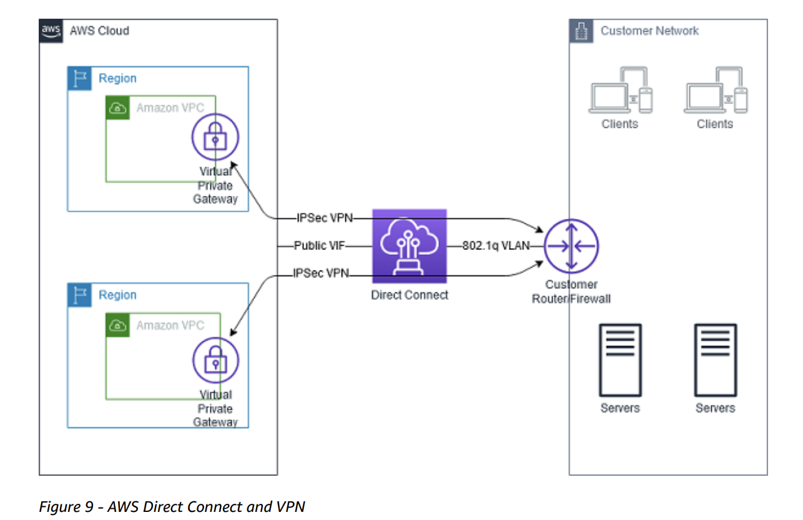- With AWS Direct Connect plus VPN, you can combine one or more AWS Direct Connect dedicated network connections with the Amazon VPC VPN.
- This combination provides an IPsec-encrypted private connection that also reduces network costs, increases bandwidth throughput, and provides a more consistent network experience than internet-based VPN connections.
- This solution combines the AWS managed benefits of the VPN solution with low latency, increased bandwidth, more consistent benefits of the AWS Direct Connect solution, and an end-to-end, secure IPsec connection.
Direct Connect does not come with encryption option. It is just a high-performance dedicated connection
AWS Transit Gateway
- AWS Transit Gateway is a highly available and scalable service to consolidate the AWS VPC routing configuration for a region with a hub-and-spoke architecture. Each spoke VPC only needs to connect to the Transit Gateway to gain access to other connected VPCs.
- With large number of VPCs, Transit Gateway provides simpler VPC-to-VPC communication management over VPC Peering.
S3 Data Consistency
read-after-write consistency for PUTS
- Amazon S3 provides read-after-write consistency for PUTS of new objects in your S3 bucket in all Regions with one caveat （限制条款）.
- The caveat is that if you make a HEAD or GET request to a key name before the object is created, then create the object shortly after that, a subsequent GET might not return the object due to eventual consistency.
eventual consistency for overwrite PUTS and DELETES in all Regions
Amazon S3 offers eventual consistency for overwrite PUTS and DELETES in all Regions.
Amazon S3 achieves high availability by replicating data across multiple servers within AWS data centers. If a PUT request is successful, your data is safely stored.
However, information about the changes must replicate across Amazon S3, which can take some time, and so you might observe the following behaviors: A process writes a new object to Amazon S3 and immediately lists keys within its bucket.
- Until the change is fully propagated, the object might not appear in the list. A process replaces an existing object and immediately tries to read it. Until the change is fully propagated, Amazon S3 might return the previous data. A process deletes an existing object and immediately tries to read it. Until the deletion is fully propagated, Amazon S3 might return the deleted data. A process deletes an existing object and immediately lists keys within its bucket. Until the deletion is fully propagated, Amazon S3 might list the deleted object.
Amazon Glacier and Glacier Deep Archive Retrieval
S3 Glacier
Expedited Retrieval
- On-Demand: 1-5 mins
- Provisioned: when you need them
Standard Retrieval
3 – 5 hours.
Bulk Retrieval
5 – 12 hours.
S3 Glacier Deep Archieve
Standard
within 12 hours
Bulk
within 48 hours
RDS encryption
On a database instance running with Amazon RDS encryption, data stored at rest in the underlying storage is encrypted, as are its automated backups, read replicas, and snapshots.
RDS Multi- AZ
Active Instances?
- Non-Aurora: only the primary instance is active;
- Aurora: all instances are active
Backup?
- Non-Aurora: automated backups are taken from standby;
- Aurora: automated backups are taken from shared storage layer
Replication?
- Non-Aurora: synchronous replication;
- Aurora: asynchronous replication
Accessing S3 data
Byte Range Fetch
- Using the
RangeHTTP header in a GET Object request, you can fetch a byte-range from an object, transferring only the specified portion. - You can use
concurrentconnections to Amazon S3 to fetch different byte ranges from within the same object. This helps you achieve higher aggregate throughput versus a single whole-object request. - Fetching smaller ranges of a large object also allows your application to improve retry times when requests are interrupted.
- A byte-range request is a perfect way to get the beginning of a file and ensuring we remain efficient during our scan of our S3 bucket.
S3 Select
S3 Select, now generally available, enables applications to retrieve only a subset of objects from an object by using simple SQL expressions. By using S3 Select to retrieve only the data needed by your application, you can achieve drastic performance increase.
S3 Select ScanRange
- With Amazon S3 Select, you can scan a subset of an object by specifying a range of bytes to query using the ScanRange parameter.
- This capability lets you parallelize scanning the whole object by splitting the work into separate Amazon S3 Select requests for a series of non-overlapping scan ranges.
- Use the Amazon S3 Select
ScanRangeparameter andStartat (Byte) andEndat (Byte).

Glacier Select
Glacier Select allows you to to perform filtering directly against a Glacier object using standard SQL statements.
Glacier Select is priced in 3 dimensions.
- GB of Data Scanned
- GB of Data Returned
- Select Requests
Pricing for each dimension is determined by the speed at which you want your results returned: expedited (1-5 minutes), standard (3-5 hours), and bulk (5-12 hours).
SQS FIFO vs Kinesis Data Stream
You are establishing a monitoring solution for desktop systems, that will be sending telemetry data into AWS every 1 minute. Data for each system must be processed in order, independently, and you would like to scale the number of consumers to be possibly equal to the number of desktop systems that are being monitored. What do you recommend?
SQS GroupID
- If we don’t specify a GroupID, then all the messages are in absolute order, but we can only have 1 consumer at most.
- To allow for multiple consumers to read data for each Desktop application, and to scale the number of consumers, we should use the
Group IDattribute. - The message group ID is the tag that specifies that a message belongs to a specific message group.
- Messages that belong to the same message group are always processed one by one, in a strict order relative to the message group (however, messages that belong to different message groups might be processed out of order).
Kinesis Data Firehose
- Amazon Kinesis Data Firehose is the easiest way to reliably load streaming data into data lakes, data stores, and analytics tools.
- It can capture, transform, and load streaming data into Amazon S3, Amazon Redshift, Amazon Elasticsearch Service, and Splunk, enabling near real-time analytics with existing business intelligence tools and dashboards you’re already using today.
- It is a fully managed service that automatically scales to match the throughput of your data and requires no ongoing administration.
Retrieving instance metadata
http://169.254.169.254/latest/meta-data/
- The IP address
169.254.169.254is a link-local address and is valid only from the instance. - Note that you are not billed for HTTP requests used to retrieve instance metadata and user data.
- You can also use instance metadata to access user data that you specified when launching your instance.
Available in metadata:
1 | [ec2-user@ip-172-31-55-48 ~]$ curl http://169.254.169.254/latest/meta-data |
Snowball, mobile Capcity
100PB = 100 * 1000 TB
Snowmobile is an Exabyte-scale data transfer service. 1EB = 1000PB
For > 10PB, use snowmobile.
Snowball Edge Storage Optimized
- 80 TB of HDD capacity for block volumes and Amazon S3-compatible object storage
- 40 vCPU
- well suited for local storage and large scale-data transfer
Snowball Edge Compute Optimized
- 52 vCPU
- an optional GPU
- 42 TB usable HDD capacity
S3
S3 Security
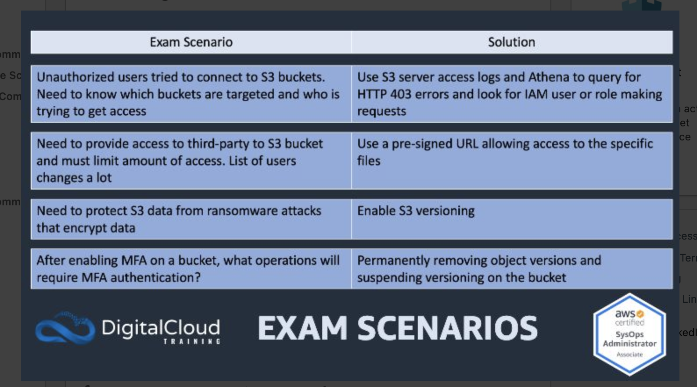Hosting Static website on S3
To host a static website on Amazon S3, you:
- Configure an Amazon S3 bucket for website hosting, and then
- Upload your website content to the bucket
URL of your index page
Depending on your Region, your Amazon S3 website endpoint follows one of these two formats.
- s3-website dash (-) Region ‐
http://bucket-name.s3-website-Region.amazonaws.com - s3-website dot (.) Region ‐
http://bucket-name.s3-website.Region.amazonaws.com
Configure Permissions
When you configure a bucket as a static website, if you want your website to be public, you can grant public read access.
- disable block public access settings for the bucket
- write a bucket policy that grants public read access
- If your bucket contains objects that are not owned by the bucket owner, you might also need to add an object access control list (ACL) that grants everyone read access.
Bucket Policy looks like this:
1 | { |
SQS Short Polling and Long Polling
Short Polling
When you consume messages from a queue using short polling, Amazon SQS samples a subset of its servers (based on a weighted random distribution) and returns messages from only those servers. Thus, a particular ReceiveMessage request might not return all of your messages.

Long Polling
- Query all SQS Servers.
- Return messages as soon as they become available.
- When the wait time for the ReceiveMessage API action is greater than 0, long polling is in effect. The maximum long polling wait time is 20 seconds. Long polling helps reduce the cost of using Amazon SQS by eliminating the number of empty responses (when there are no messages available for a ReceiveMessage request) and false empty responses (when messages are available but aren’t included in a response because it is not in the subset of servers being queried by short polling).
Roles for EC2 Instances
Applications that run on the instance can use the role-supplied temporary credentials to sign API requests.

EC2 Data transfer pricing
Out to Internet
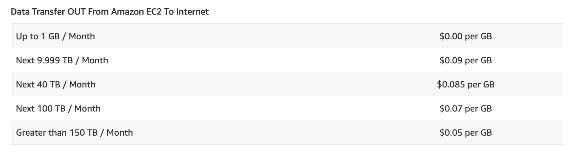Using Public IPv4/IPv6 incurs a unified charge
IPv4: Data transferred “in” to and “out” from public or Elastic IPv4 address is charged at $0.01/GB in each direction.
IPv6: Data transferred “in” to and “out” from an IPv6 address in a different VPC is charged at $0.01/GB in each direction.
Across AZ
Data transferred “in” to and “out” from Amazon EC2, Amazon RDS, Amazon Redshift , Amazon DynamoDB Accelerator (DAX), and Amazon ElastiCache instances or Elastic Network Interfaces across Availability Zones or VPC Peering connections in the same AWS Region is charged at $0.01/GB in each direction.
Data transferred between Amazon EC2, Amazon RDS, Amazon Redshift, Amazon ElastiCache instances and Elastic Network Interfaces in the same Availability Zone is free.
EC2 -> Services Free transfer
Data transferred between Amazon S3, Amazon Glacier, Amazon DynamoDB, Amazon SES, Amazon SQS, Amazon Kinesis, Amazon ECR, Amazon SNS or Amazon SimpleDB and Amazon EC2 instances in the same AWS Region is free.
Data transferred “in” to and “out” from Amazon Classic and Application Elastic Load Balancers using private IP addresses, between EC2 instances and the load balancer in the same AWS Region is free.
Security Group Rules
Outbound Rule Port
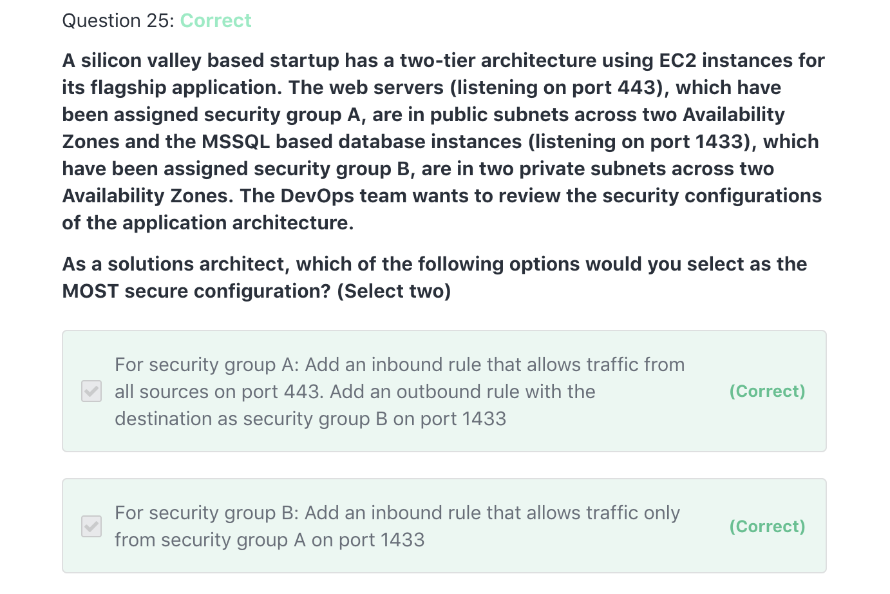Security Group A removes the Outbound Rule to allow all traffic.
Instead, it only allows traffic towards the port 1433 of instances in Security Group B. This port is the port of its destination.
Default Security Group
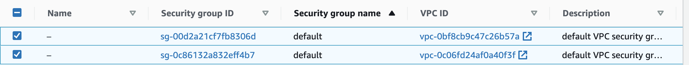- For each VPC, there is a default security group.
- Default SG cannot be deleted.
- You can EDIT your default SG for each VPC.
Default SG Rules:
- Outbound Rules: Allow all
- Inbound Rules: Allow inbound traffic from network interfaces (and their associated instances) that are assigned to the same security group.
Default Rules of a user-created Security Group
- Allows no inbound traffic
- Allows all outbound traffic
IAM Policies
- A policy is an object in AWS that, when associated with an identity or resource, defines their permissions.
- AWS evaluates these policies when an IAM principal (user or role) makes a request.
- AWS supports six types of policies:
- identity-based policies,
- resource-based policies,
- permissions boundaries,
- Organizations SCPs,
- ACLs,
- session policies
Resource field of a Policy
The Resource field specifies the resource being granted/denied access for the principle.
s3:ListBucketis applied to buckets, so the ARN is in the formResource":"arn:aws:s3:::mybucket, without a trailing /s3:GetObjectis applied to objects within the bucket, so the ARN is in the form “Resource”:arn:aws:s3:::mybucket/*, with a trailing/*to indicate all objects within the bucket mybucket
Policy Conditions
aws:SourceIp
1 | { |
The aws:SourceIP in this condition always represents the IP of the caller of the API. That is very helpful if you want to restrict access to certain AWS API for example from the public IP of your on-premises infrastructure.
aws: calledVia
Use this key to compare the services in the policy with the services that made requests on behalf of the IAM principal (user or role).
aws:CurrentTime
Use this key to compare the date and time of the request with the date and time that you specify in the policy.
aws:MultiFactorAuthAge
Use this key to compare the number of seconds since the requesting principal was authorized using MFA with the number that you specify in the policy.
aws:PrincipalAccount
Use this key to compare the account to which the requesting principal belongs with the account identifier that you specify in the policy.
aws:RequestedRegion
1 | { |
- You can use the
aws:RequestedRegionkey to compare the AWS Region that was called in the request with the Region that you specify in the policy. You can use this global condition key to control which Regions can be requested. aws:RequestedRegionrepresents the target of the API call. So in this example, we can only launch EC2 instances in eu-west-1, and we can do this API call from anywhere.
aws:SourceVpc
Use this key to check whether the request comes from the VPC that you specify in the policy.
Consider the timeout of your job when choosing Lambda
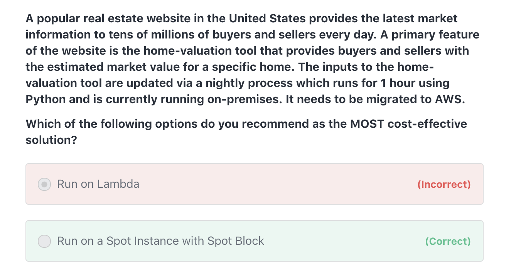Lambda: 15 min time out
- AWS Lambda lets you run code without provisioning or managing servers. You pay only for the compute time you consume.
- Lambda would be the perfect fit if our script could run in less than 15 minutes, as this is the maximum timeout for Lambda.
Spot Blocks: Cheap solution for jobs above 15 mins
-A Spot Instance is an unused EC2 instance that is available for less than the On-Demand price. Because Spot Instances enable you to request unused EC2 instances at steep discounts, you can lower your Amazon EC2 costs significantly. The hourly price for a Spot Instance is called a Spot price.
- Spot Instances with a defined duration (also known as Spot blocks) are designed not to be interrupted and will run continuously for the duration you select. This makes them ideal for jobs that take a finite time to complete, such as batch processing, encoding and rendering, modeling and analysis, and continuous integration.
- Running our load on a Spot Instance with Spot Block sounds like the perfect use case, as we can block the spot instance for 1 hour, run the script there, and then the instance will be terminated.
Fargate
If you need a container and you want to run more than 15 minutes, you can also think of Fargate, the serverless Container solution.
Automated Reboot
Using Amazon CloudWatch alarm actions, you can create alarms that automatically stop, terminate, reboot, or recover your EC2 instances.
You can create an Amazon CloudWatch alarm that monitors an Amazon EC2 instance and automatically reboots the instance.
The reboot alarm action is recommended for Instance Health Check failures (as opposed to the recover alarm action, which is suited for System Health Check failures).
Reboot upon Instance Health Check failure
EC2 -> Instances -> Instance->Monitoring -> Create Alarm -> Take the action: Reboot the instance
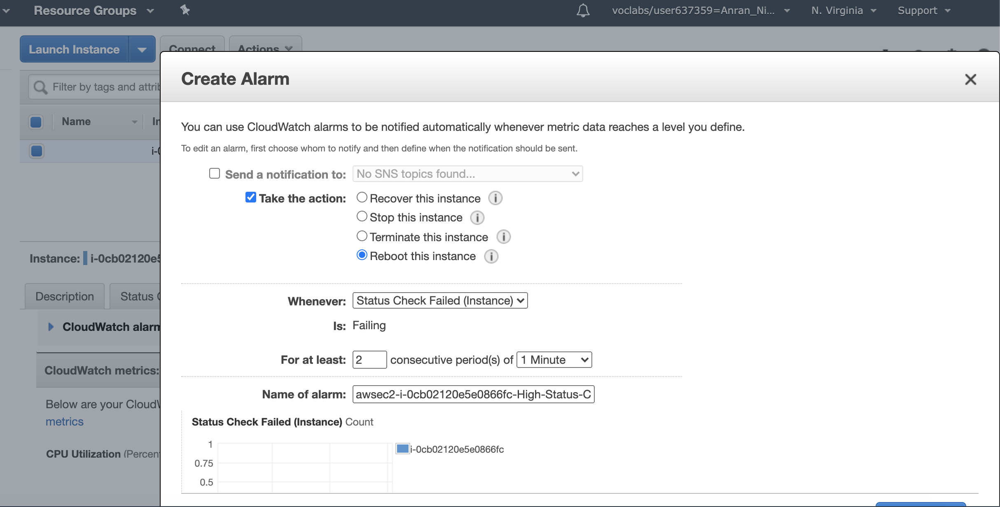Using CloudWatch event or CloudWatch alarm to trigger a lambda function to reboot the instance, directly or indirectly, is wasteful of resources. You should just use the EC2 Reboot CloudWatch Alarm Action to reboot the instance.
Recover upon System Health Check failure
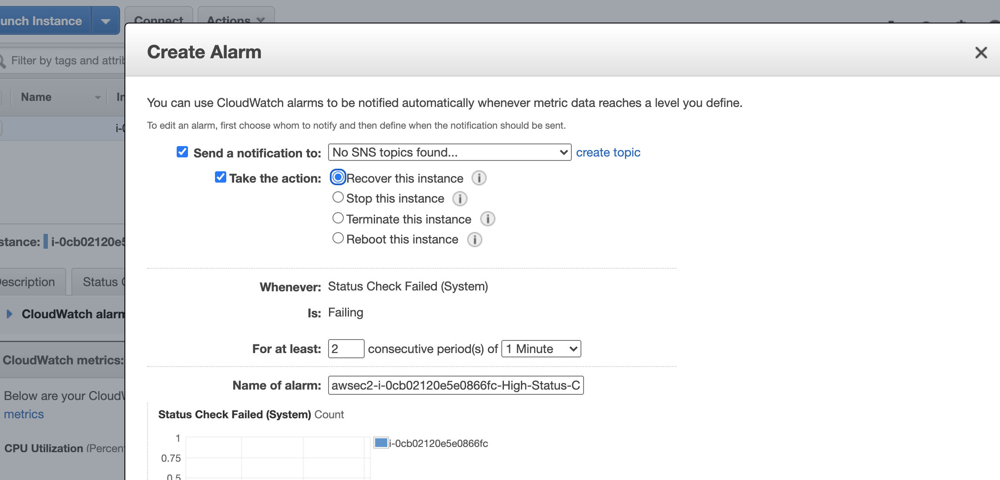- A recovered instance is identical to the original instance, including the instance ID, private IP addresses, Elastic IP addresses, and all instance metadata.
- If the impaired instance is in a placement group, the recovered instance runs in the placement group.
- If your instance has a public IPv4 address, it retains the public IPv4 address after recovery.
- During instance recovery, the instance is migrated during an instance reboot, and any data that is in-memory is lost.
Amazon S3 notification
- The Amazon S3 notification feature enables you to receive notifications when certain events happen in your bucket.
- To enable notifications, you must:
- add a notification configuration that identifies the events you want Amazon S3 to publish
- define the destinations where you want Amazon S3 to send the notifications.
Amazon S3 notification supported Destinations
Amazon S3 supports the following destinations where it can publish events:
- Amazon Simple Notification Service (Amazon SNS) topic
- Amazon Simple Queue Service (Amazon SQS) queue (Standard only. FIFO is not supported.)
- AWS Lambda
Amazon Aurora Global Database
Amazon Aurora features a distributed, fault-tolerant, self-healing storage system that auto-scales up to 64TB per database instance. Aurora is not an in-memory database.
- Amazon Aurora Global Database is designed for globally distributed applications, allowing a single Amazon Aurora database to span multiple AWS regions.
- It replicates your data with no impact on database performance, enables fast local reads with low latency in each region, and provides disaster recovery from region-wide outages.
DynamoDB Global Tables
- Global Tables builds upon DynamoDB’s global footprint to provide you with a fully managed, multi-region, and multi-master database that provides fast, local, read, and write performance for massively scaled, global applications.
- Global Tables replicates your Amazon DynamoDB tables automatically across your choice of AWS regions.
Sharing Resources across accounts/VPC
AWS Resource Access Manager (RAM): cross-account, same region
- AWS Resource Access Manager (RAM) is a service that enables you to easily and securely share AWS resources with any AWS account or within your AWS Organization.
- You can share AWS Transit Gateways, Subnets, AWS License Manager configurations, and Amazon Route 53 Resolver rules resources with RAM.
- RAM eliminates the need to create duplicate resources in multiple accounts, reducing the operational overhead of managing those resources in every single account you own.
- You can create resources centrally in a multi-account environment, and use RAM to share those resources across accounts in three simple steps:
- create a Resource Share,
- specify resources, and
- specify accounts.
- RAM is available to you at no additional charge.
- THe resources you share cannot cross region.
Resource Access Manager v.s. VPC Peering
- A VPC peering connection is a networking connection between two VPCs that enables you to route traffic between them using private IPv4 addresses or IPv6 addresses. Instances in either VPC can communicate with each other as if they are within the same network. You can create a VPC peering connection between your VPCs, or with a VPC in another AWS account. The VPCs can be in different regions (also known as an inter-region VPC peering connection).
- VPC peering connections will work, but won’t efficiently scale if you add more accounts (you’ll have to create many connections).
- Resource and the destination to share in the same region in different accounts -> AWS RAM
- Resource and destination to share in a different region –> VPC Peering
RAM v.s. Transit Gateway
AWS Transit Gateway is a service that enables customers to connect their Amazon Virtual Private Clouds (VPCs) and their on-premises networks to a single gateway.
A Transit Gateway will work but will be an expensive solution.
VPC Peering v.s. Transit Gateway
Transit Gateway solves the complexity involved with creating and managing multiple VPC peering connections at scale. While this makes TGW a good default for most network architectures, VPC peering is still a valid choice due to the following advantages it has over TGW:
- Low Cost
- No bandwidth limits (With Transit Gateway, Maximum bandwidth (burst) per Availability Zone per VPC connection is 50 Gbps. VPC peering has no aggregate bandwidth.)
- Latency (Unlike VPC peering, Transit Gateway is an additional hop between VPCs)
- Security Groups compatibility (Security groups referencing works with intra-Region VPC peering. It does not currently work with Transit Gateway)
Within your Landing Zone setup, VPC Peering can be used in combination with the hub and spoke model enabled by Transit Gateway.
Transit Gateway hub and spoke model
- AWS Transit Gateway connects VPCs and on-premises networks through a central hub.
- This simplifies your network and puts an end to complex peering relationships.
- It acts as a cloud router – each new connection is only made once.
AWS Glue
- Extract, Transform, Load
- Prepare your data to be analysed.
- You simply point AWS Glue to your data stored on AWS
- AWS Glue discovers your data and stores the associated metadata (e.g. table definition and schema) in the AWS Glue Data Catalog


RDS multi-AZ, multi-region, read-replica
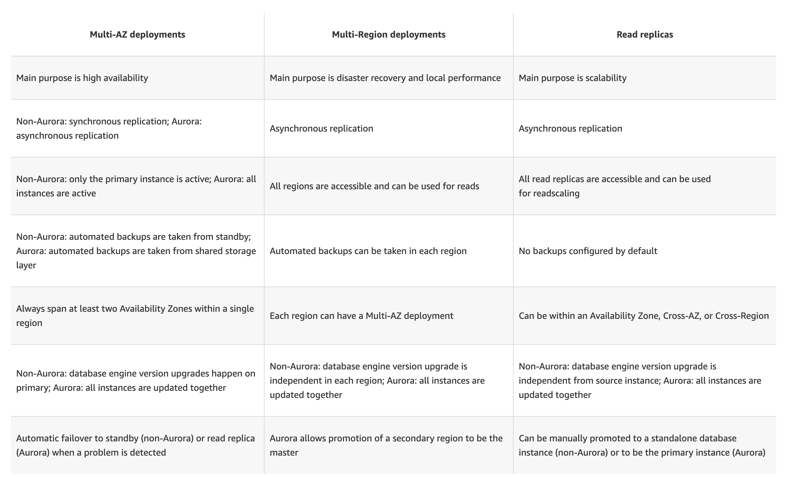Recover from AZ failure for ONE server
- Create an auto-scaling group that spans across 2 AZ, which min=1, max=1, desired=1
- Create an Elastic IP and use the EC2 user-data script to attach it
- With an Elastic IP address, you can mask the failure of an instance or software by rapidly remapping the address to another instance in your account.
- If we use an ALB, things will still work, but we will have to pay for the provisioned ALB which sends traffic to only one EC2 instance.
Minimise Bootstrap Time
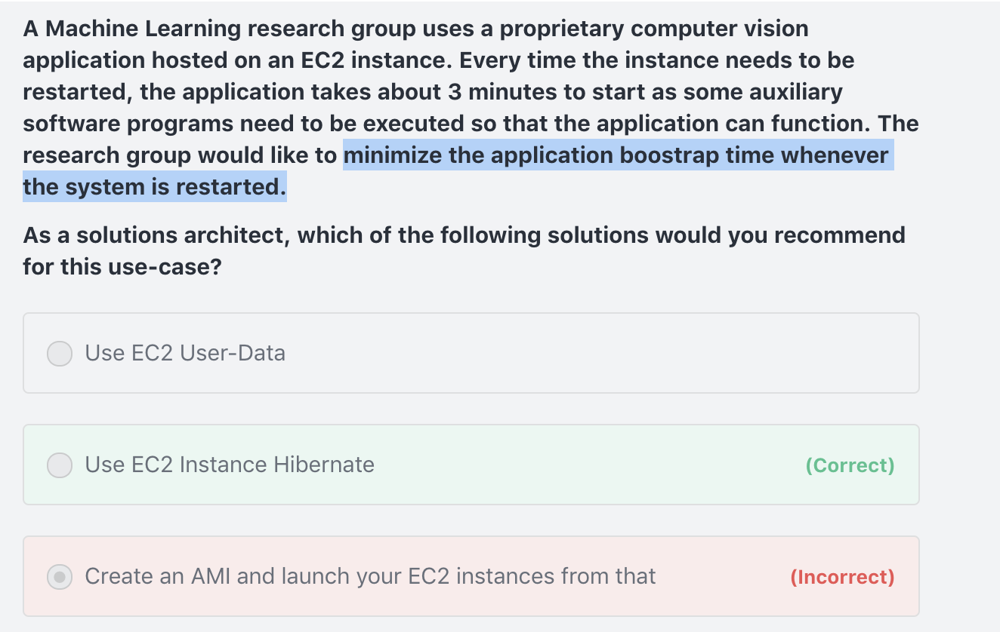AMI saves installation time
Creating an AMI may help with all the system dependencies, but it won’t help us with speeding up the application start time.
Hibernate saves time to start an application
By using EC2 hibernate, we have the capability to resume it at any point of time, with the application already launched, thus helping us cut the application start time.
WAF to defense against traffic pattern/IP
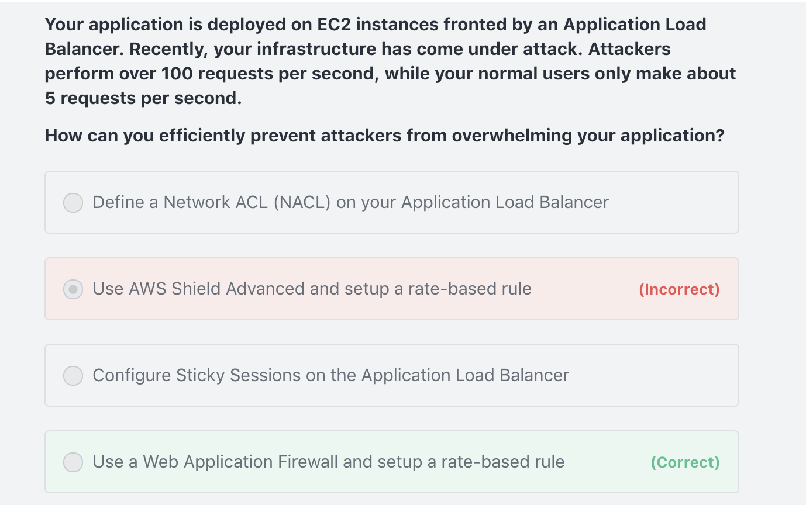 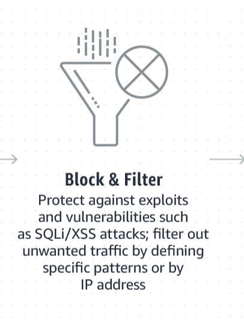- AWS WAF is a web application firewall that helps protect your web applications or APIs against common web exploits that may affect availability, compromise security, or consume excessive resources.
- AWS WAF gives you control over how traffic reaches your applications by enabling you to create security rules that block common attack patterns, such as
- SQL injection
- cross-site scripting,
- specific traffic patterns
Rate-based rule
A rate-based rule tracks the rate of requests for each originating IP address, and triggers the rule action on IPs with rates that go over a limit. You set the limit as the number of requests per 5-minute time span.
IP match conditions
If you want to allow or block web requests based on the IP addresses that the requests originate from, create one or more IP match conditions. An IP match condition lists up to 10,000 IP addresses or IP address ranges that your requests originate from.
WAF Geo Match
To block specific countries, you can create a WAF geo match statement listing the countries that you want to block.
v.s. AWS Shield
AWS Shield Advanced will give you DDoS protection overall, and you cannot set up rate-based rules in Shield.
Transactional Processing -> Relational Database
Be mindful of what the data schema should be.
DynamoDB -> key-value pair, items, attributes, keys
Choose Load Balancer for bastion hosts
An ALB only supports HTTP traffic, which is layer 7, while the SSH protocol is based on TCP and is layer 4.
Migrate an account from one Organisation to Another
To migrate accounts from one organization to another, you must have root or IAM access to both the member and master accounts.
Here are the steps to follow:
- Remove the member account from the old organization
- Send an invite to the new organization
- Accept the invite to the new organization from the member account
AWS DataSync

User Cases
AWS DataSync makes it simple and fast to move large amounts of data online between on-premises storage and:
- Amazon S3,
- Amazon Elastic File System (Amazon EFS), or
- Amazon FSx for Windows File Server.
Performance
Automation
- Manual tasks related to data transfers can slow down migrations and burden IT operations.
DataSync eliminates or automatically handles many of these tasks, including:- scripting copy jobs,
- scheduling and monitoring transfers,
- validating data, and
- optimizing network utilization.
- The DataSync software agent connects to your Network File System (NFS), Server Message Block (SMB) storage, and your self-managed object storage, so you don’t have to modify your applications.
Outcome
- DataSync can transfer hundreds of terabytes and millions of files at speeds up to 10 times faster than open-source tools or command line tools, over the internet or AWS Direct Connect links.
- DataSync uses a purpose-built network protocol and scale-out architecture to transfer data. A single DataSync agent is capable of saturating a 10 Gbps network link.
Security
- Automatic encryption
- Automatic data integrity check at rest and in transit
Service Integration
It is natively integrated with:
- Amazon S3,
- Amazon EFS,
- Amazon FSx for Windows File Server,
- Amazon CloudWatch, and
- AWS CloudTrail,
which provides seamless and secure access to your storage services, as well as detailed monitoring of the transfer.
If you have large amounts of cold data stored in expensive on-premises storage systems, you can move this data directly to durable and secure long-term storage such as Amazon S3 Glacier or Amazon S3 Glacier Deep Archive.
AWS Transfers Family
The AWS Transfer Family provides fully managed support for file transfers directly into and out of Amazon S3. With support for Secure File Transfer Protocol (SFTP), File Transfer Protocol over SSL (FTPS), and File Transfer Protocol (FTP), the AWS Transfer Family helps you seamlessly migrate your file transfer workflows to AWS by integrating with existing authentication systems, and providing DNS routing with Amazon Route 53 so nothing changes for your customers and partners, or their applications.
Route 53 Resolver: Resolving DNS queries between VPCs and your network
When you create a VPC using Amazon VPC, Route 53 Resolver automatically answers DNS queries for local VPC domain names for EC2 instances (ec2-192-0-2-44.compute-1.amazonaws.com) and records in private hosted zones (acme.example.com). For all other domain names, Resolver performs recursive lookups against public name servers.
You also can integrate DNS resolution between Resolver and DNS resolvers on your network by configuring forwarding rules. Your network can include any network that is reachable from your VPC, such as the following:
- The VPC itself
- Another peered VPC
- An on-premises network that is connected to AWS with AWS Direct Connect, a VPN, or a network address translation (NAT) gateway
Inbound endpoint
DNS resolvers on your network can forward DNS queries to Route 53 Resolver via this endpoint
Outbound endpoint
Resolver conditionally forwards queries to resolvers on your network via this endpoint.
To forward selected queries, you create Resolver rules that specify the domain names for the DNS queries that you want to forward (such as example.com), and the IP addresses of the DNS resolvers on your network that you want to forward the queries to.
Regional
Like Amazon VPC, Resolver is regional.
In each region where you have VPCs, you can choose whether to
- forward queries from your VPCs to your network (outbound queries),
- from your network to your VPCs (inbound queries),
S3 Glacier default automatic encryption
Amazon S3 Glacier automatically encrypts data at rest using Advanced Encryption Standard (AES) 256-bit symmetric keys and supports secure transfer of your data over Secure Sockets Layer (SSL).
The S3 class family does not support encyption by default.
AWS CloudFormation StackSets and templates
Templates
- CloudFormation template is a JSON or YAML-format, text-based file that describes all the AWS resources you need to deploy to run your application.
- A template acts as a blueprint for a stack.
- CloudFormation templates can NOT be used to deploy the same template across AWS accounts and regions.
Stack
CloudFormation stack is a set of AWS resources that are created and managed as a single unit when AWS CloudFormation instantiates a template.
StackSets
- AWS CloudFormation StackSet extends the functionality of stacks by enabling you to create, update, or delete stacks across multiple accounts and regions with a single operation.
- A stack set lets you create stacks in AWS accounts across regions by using a single AWS CloudFormation template.
- Using an administrator account of an “AWS Organization”, you define and manage an AWS CloudFormation template, and use the template as the basis for provisioning stacks into selected target accounts of an “AWS Organization” across specified regions.
Administrator and target accounts
- An administrator account is the AWS account in which you create stack sets.
- A stack set is managed by signing in to the AWS administrator account in which it was created.
- A target account is the account into which you create, update, or delete one or more stacks in your stack set.
- Before you can use a stack set to create stacks in a target account, you must set up a trust relationship between the administrator and target accounts.
Stack instances: reference to a stack
- A stack instance is a reference to a stack in a target account within a Region.
- A stack instance can exist without a stack; for example, if the stack could not be created for some reason, the stack instance shows the reason for stack creation failure.
- A stack instance is associated with only one stack set.
AWS Config
Use AWS Config to review resource configurations to meet compliance guidelines and maintain a history of resource configuration changes

Automatically evaluates the recorded configurations, against the configurations you specify.
AWS Database Migration Service (DMS)
- AWS Database Migration Service helps you migrate databases to AWS quickly and securely.
- The source database remains fully operational during the migration, minimizing downtime to applications that rely on the database.
Homogeneous Migrations
AWS Database Migration Service supports homogeneous migrations such as Oracle to Oracle, as well as heterogeneous migrations between different database platforms, such as Oracle or Microsoft SQL Server to Amazon Aurora.

into Data Warehouse
With AWS Database Migration Service, you can continuously replicate your data with high availability and consolidate databases into a petabyte-scale data warehouse by streaming data to Amazon Redshift and Amazon S3.
Continuous Data Replication

Pricing
When migrating databases to Amazon Aurora, Amazon Redshift, Amazon DynamoDB or Amazon DocumentDB (with MongoDB compatibility) you can use DMS free for six months.
Aurora v.s. Aurora Serverless
Aurora features a distributed, fault-tolerant, self-healing storage system that auto-scales up to 64TB per database instance. But, its not a complete auto scaling solution.
Aurora Serverless
Serverless
Amazon Aurora Serverless is an on-demand, auto-scaling configuration for Amazon Aurora (MySQL-compatible and PostgreSQL-compatible editions), where the database will automatically start-up, shut down, and scale capacity up or down based on your application’s needs. It enables you to run your database in the cloud without managing any database instances.
User case
It’s a simple, cost-effective option for infrequent, intermittent, or unpredictable workloads.
Billing
You pay on a per-second basis for the database capacity you use when the database is active.
Migration
You migrate between standard and serverless configurations with a few clicks in the Amazon RDS Management Console.
VPN CloudHub: Providing secure communication between sites
User Case
- If you have multiple AWS Site-to-Site VPN connections, you can provide secure communication between sites using the AWS VPN CloudHub.
- This enables your remote sites to communicate with each other, and not just with the VPC.
- This design is suitable if you have multiple branch offices and existing internet connections and would like to implement a convenient, potentially low-cost hub-and-spoke model for primary or backup connectivity between these remote offices.
How it works
- Sites that use AWS Direct Connect connections to the virtual private gateway can also be part of the AWS VPN CloudHub.
- The VPN CloudHub operates on a simple hub-and-spoke model that you can use with or without a VPC.

Kinesis Enhanced Fan-out
By default, the 2MB/second/shard output is shared between all of the applications consuming data from the stream.
You should use enhanced fan-out if you have multiple consumers retrieving data from a stream in parallel.
With enhanced fan-out developers can register stream consumers to use enhanced fan-out and receive their own 2MB/second pipe of read throughput per shard, and this throughput automatically scales with the number of shards in a stream.

Kinesis Data Firehose Destination limination
- Kinesis Data Firehose can only write to:
- S3,
- Redshift,
- Elasticsearch
- Splunk
- You can’t have applications consuming data streams from Kinesis Data Firehose, that’s the job of Kinesis Data Streams.
SQS Standard->FIFO
If you have an existing application that uses standard queues and you want to take advantage of the ordering or exactly-once processing features of FIFO queues, you need to configure the queue and your application correctly. You can’t convert an existing standard queue into a FIFO queue. To make the move, you must either create a new FIFO queue for your application or delete your existing standard queue and recreate it as a FIFO queue.
FIFO naming
The name of a FIFO queue must end with the .fifo suffix. The suffix counts towards the 80-character queue name limit. To determine whether a queue is FIFO, you can check whether the queue name ends with the suffix.
Things that you cannot edit/convert, and have to recreate
- AMI
- Launch Configuration
- Launch Template
- SQS Standard <-> FIFO
Service Control Policies (SCP)
- If a user or role has an IAM permission policy that grants access to an action that is either not allowed or explicitly denied by the applicable SCPs, the user or role can’t perform that action
- SCPs affect all users and roles in attached accounts, including the root user
- SCPs do not affect service-linked role
S3 Glacier Vault and Vault Lock
Amazon S3 Glacier is a secure, durable, and extremely low-cost Amazon S3 cloud storage class for data archiving and long-term backup.
It is designed to deliver 99.999999999% durability, and provide comprehensive security and compliance capabilities that can help meet even the most stringent regulatory requirements.
An S3 Glacier vault is a container for storing archives.
When you create a vault, you specify a vault name and the AWS Region in which you want to create the vault.
S3 Glacier Vault Lock allows you to easily deploy and enforce compliance controls for individual S3 Glacier vaults with a vault lock policy.
You can specify controls such as “write once read many” (WORM) in a vault lock policy and lock the policy from future edits.
S3 object metadata is not encrypted
Metadata, which can be included with the object, is not encrypted while being stored on Amazon S3. Therefore, AWS recommends that customers not place sensitive information in Amazon S3 metadata.
AWS Step Functions
- AWS Step Functions lets you coordinate and orchestrate multiple AWS services such as AWS Lambda and AWS Glue into serverless workflows.
- Workflows are made up of a series of steps, with the output of one step acting as input into the next.
- A Step Function automatically triggers and tracks each step, and retries when there are errors, so your application executes in order and as expected.
- The Step Function can ensure that the Glue ETL job and the Lambda functions execute in order and complete successfully as per the workflow defined in the given use-case.
AWS Amazon Simple Workflow Service (SWF)
- Amazon Simple Workflow Service (SWF) is a web service that makes it easy to coordinate work across distributed application components.
- Amazon SWF enables applications for a range of use cases, including media processing, web application back-ends, business process workflows, and analytics pipelines, to be designed as a coordination of tasks
- Tasks represent invocations of various processing steps in an application which can be performed by executable code, web service calls, human actions, and scripts.
- The coordination of tasks involves managing execution dependencies, scheduling, and concurrency in accordance with the logical flow of the application.
Amazon SWF vs. AWS Step Functions
- AWS Step Functions is a fully managed service that makes it easy to coordinate the components of distributed applications and microservices using visual workflows.
- Instead of writing a Decider program, you define state machines in JSON.
- AWS customers should consider using Step Functions for new applications.
- If Step Functions does not fit your needs, then you should consider Amazon Simple Workflow (SWF).
- Amazon SWF provides you complete control over your orchestration logic, but increases the complexity of developing applications.
- You may write decider programs in the programming language of your choice, or you may use the Flow framework to use programming constructs that structure asynchronous interactions for you.
- AWS will continue to provide the Amazon SWF service, Flow framework, and support all Amazon SWF customers.
Amazon SWF v.s. Amazon SQS
- Amazon SWF API actions are task-oriented. Amazon SQS API actions are message-oriented.
- Amazon SWF keeps track of all tasks and events in an application. Amazon SQS requires you to implement your own application-level tracking, especially if your application uses multiple queues.
- The Amazon SWF Console and visibility APIs provide an application-centric view that lets you search for executions, drill down into an execution’s details, and administer executions. Amazon SQS requires implementing such additional functionality.
- Amazon SWF offers several features that facilitate application development, such as passing data between tasks, signaling, and flexibility in distributing tasks. Amazon SQS requires you to implement some application-level functionality.
- In addition to a core SDK that calls service APIs, Amazon SWF provides the AWS Flow Framework with which you can write distributed applications using programming constructs that structure asynchronous interactions.
NAT gateway v.s. NAT instance

NAT Gateway does NOT support Port forwarding.
Snowball or Snowmobile
To migrate large datasets of 10PB or more in a single location, you should use Snowmobile.
Default EC2 monitoring
- By default, basic monitoring is enabled when you use the AWS management console to create a launch configuration.
- Detailed monitoring is enabled by default when you create a launch configuration using the AWS CLI or SDK
VPC Sharing
VPC sharing allows customers to share subnets with other AWS accounts within the same AWS Organization.
- VPC sharing (part of Resource Access Manager) allows multiple AWS accounts to create their application resources such as EC2 instances, RDS databases, Redshift clusters, and Lambda functions, into shared and centrally-managed Amazon Virtual Private Clouds (VPCs).
- To set this up, the account that owns the VPC (owner) shares one or more subnets with other accounts (participants) that belong to the same organization from AWS Organizations.
- After a subnet is shared, the participants can view, create, modify, and delete their application resources in the subnets shared with them. Participants cannot view, modify, or delete resources that belong to other participants or the VPC owner.
- You can share Amazon VPCs to leverage the implicit routing within a VPC for applications that require a high degree of interconnectivity and are within the same trust boundaries.
- This reduces the number of VPCs that you create and manage while using separate accounts for billing and access control.
VPC Peering does not provide shared and centrally managed VPC
Global Accelerator v.s. CloudFront
AWS Global Accelerator and Amazon CloudFront are separate services that use the AWS global network and its edge locations around the world.
CloudFront improves performance for both cacheable content (such as images and videos) and dynamic content (such as API acceleration and dynamic site delivery).
Global Accelerator improves performance for a wide range of applications over TCP or UDP by proxying packets at the edge to applications running in one or more AWS Regions.
Global Accelerator is a good fit for non-HTTP use cases, such as gaming (UDP), IoT (MQTT), or Voice over IP, as well as for HTTP use cases that specifically require static IP addresses or deterministic, fast regional failover.
Both services integrate with AWS Shield for DDoS protection.
Schema Conversion Tool of DMS

File Gateway v.s. Volume Gateway
File Gateway
- Used to access objects
- Network File System (NFS) and Server Message Block (SMB)
Volume Gateway
- Unlike File Gateways which are used for accessing objects, Volume Gateways present your on-premise application with the iSCSI block storage instead.
- Volume Gateways allow you to have point-in-time backups of your volumes stored as EBS snapshots, and come in two different operational modes: stored and cached.
Tape Gateway
A tape gateway provides cloud-backed virtual tape storage. The tape gateway is deployed into your on-premises environment as a VM running on VMware ESXi, KVM, or Microsoft Hyper-V hypervisor.
Site-to-Site VPN terms
- Customer Gateway: An AWS resource that provides information to AWS about your Customer Gateway device.
- Customer Gateway device: A physical device or software application on the customer side of the Site-to-Site VPN connection.
- Virtual private gateway: A Virtual Private Gateway (also known as a VPN Gateway) is the endpoint on the AWS VPC side of your VPN connection.
Basic Schema Copy of DMS
To quickly migrate a database schema to your target instance you can rely on the Basic Schema Copy feature of AWS Database Migration Service. Basic Schema Copy will automatically create tables and primary keys in the target instance if the target does not already contain tables with the same names. Basic Schema Copy is great for doing a test migration, or when you are migrating databases heterogeneously e.g. Oracle to MySQL or SQL Server to Oracle. Basic Schema Copy will not migrate secondary indexes, foreign keys or stored procedures. When you need to use a more customizable schema migration process (e.g. when you are migrating your production database and need to move your stored procedures and secondary database objects), you must use the AWS Schema Conversion Tool.
Limitations to changing tenancy
Dedicated and Host can change between each other.
Dedicated/Host cannot change to Default.
Default cannot change to Dedicated/host.
SQS Delay Queues
DelaySeconds value.
As the consuming components need additional time to process SQS messages, the company wants to postpone the delivery of new messages to the queue for a few seconds.
VPC Wizard Configs
- VPC with a single public subnet
- VPC with public and private subnets
- VPC with public and private subnets and AWS Site-to-Site VPN access
- VPC with a private subnet only and AWS Site-to-Site VPN access
EFS is POSIX-compliant
Amazon EFS provides elastic, shared file storage that is POSIX-compliant.
VPC Sharing
VPC sharing allows customers to share subnets with other AWS accounts within the same AWS Organization. This is a very powerful concept that allows for a number of benefits:
- Separation of duties: centrally controlled VPC structure, routing, IP address allocation.
- Application owners continue to own resources, accounts, and security groups.
- VPC sharing participants can reference security group IDs of each other.
- Efficiencies: higher density in subnets, efficient use of VPNs and AWS Direct Connect.
- Hard limits can be avoided, for example, 50 VIFs per AWS Direct Connect connection through simplified network architecture.
- Costs can be optimized through reuse of NAT gateways, VPC interface endpoints, and intra-Availability Zone traffic.
DataSync
DataSync is ideal for customers who need online migrations for active data sets, timely transfers for continuously generated data, or replication for business continuity.